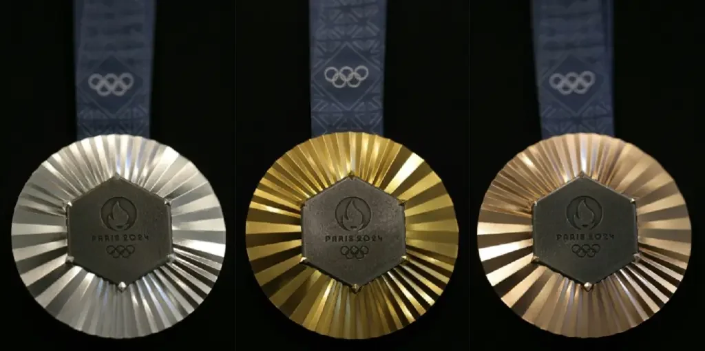

Larissa Pimenta é uma judoca brasileira conhecida por suas conquistas no esporte. Até o momento, ela não é autora de livros ou publicações com títulos específicos, mas tem um histórico notável em competições de judô. No entanto, os títulos de suas conquistas no judô incluem:
- Campeã Pan-Americana de Judô– Conquistou o título em várias edições do Campeonato Pan-Americano.
- Campeã Brasileira de Judô – Venceu em diferentes categorias e edições do Campeonato Brasileiro de Judô.
- Medalha de Ouro no Campeonato Sul-Americano de Judô – Ganhou a medalha de ouro em competições sul-americanas.
- Medalha de Bronze no Campeonato Mundial de Judô – Conquistou uma medalha de bronze em uma das edições do Campeonato Mundial.
- Medalhista em Jogos Pan-Americanos – Obtendo medalhas em edições dos Jogos Pan-Americanos.
- Medalhista nas olimpiadas de toquio- Obtendo a medalha de Bronze.
Conquista recente na olimpiada de Paris:
Larissa fez ótima campanha em Paris, sua segunda Olimpíada. Eliminada nas oitavas em Tóquio 2020, a paulista venceu Djamila Silva, de Cabo Verde, por ippon na estreia, e passou pela britânica Chelsie Giles por waza-ari nas oitavas. Nas quartas, veio um revés contra a francesa Amandine Buchard por waza-ari, mas Pimenta se recuperou com um ippon no Golden Score contra a alemã Mascha Ballhaus.
A disputa foi para o Golden Score. Larissa recebeu o segundo shido por falta de combatividade - a italiana tentava entradas pouco convincentes, mas o suficiente para não receber punições da árbitra. A brasileira foi para o ataque e forçou o primeiro shido contra Giuffrida. Pimenta foi para cima, buscando a luta, e a italiana recebeu seu segundo shido, deixando tudo igual. O clima estava tenso, e Larissa tentou acelerar. Giuffrida recebeu o terceiro shido e foi eliminada. Bronze para o Brasil.